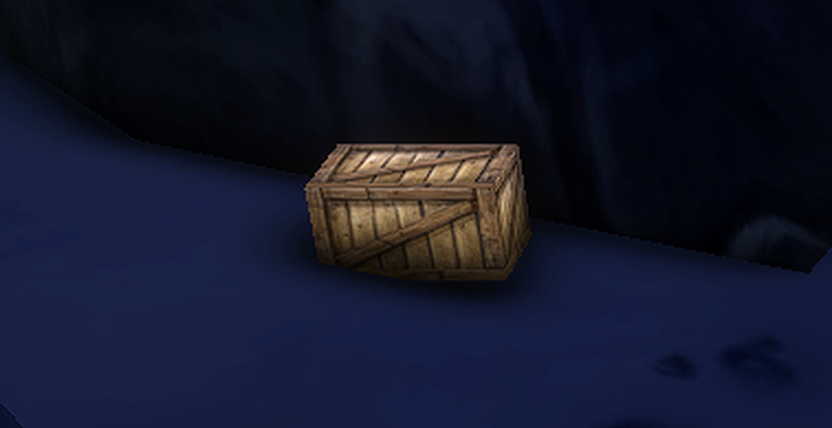
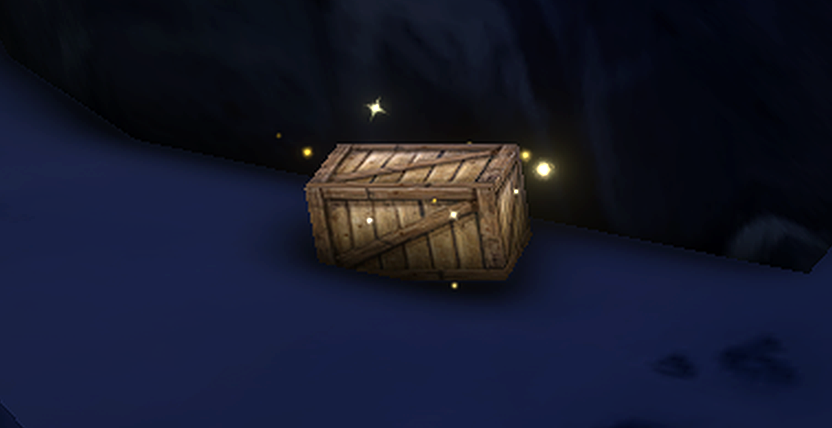

Forever
Loot Sparkles
Never walk past a quest item again.
Keeps the sparkle on lootable quest items on, even after a graphics preset turns it off.
For World of Warcraft: Forever
Never walk past a quest item again.
Keeps the sparkle on lootable quest items on, even after a graphics preset turns it off.
For World of Warcraft: Forever

Off
On